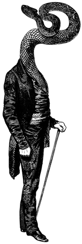

PEUR
(désir)
“L'espoir est le désir mais ouvert à la peur.” Georges BATAILLE

Tremblements, sensation de vide palpitations, cris irrépressibles, mal au cœur, difficulté à s’endormir, à penser, boule dans la gorge, nœud dans le ventre... La peur dans son état s’accompagne de phénomènes physiques qui s’expriment et s’impriment dans le corps. Sueurs, sidération, tachycardie, bouffées de chaleur, envie de se dissoudre, dissociation, envie de crier "Maman j’ai peur", vertiges, évanouissement que l’on craint tout en rêvant qu’il se réalise pour nous soustraire à l’impossible ! Les signes psycho-symptomatiques de la peur frisent parfois le ridicule ou l’aberration pour celui qu’elle n’agite pas. Catatonie, frissons, secousses, hurlement qui échappe, désir de fuir aussi fort qu’irréalisable. La peur nous fragilise, perturbe la confiance en nos capacités de résistance aux chocs et nous transforme en proie idéale face à celui que la vulnérabilité de l’autre valorise. Comment réagir aux circonstances les plus émouvantes, les plus éprouvantes, pour notre sensibilité quand on n’est pas un héros ?
Du latin pavor, dont sont dérivés peur, peureux, apeuré, décliné par les détours de la langue en épouvantail et, plus curieusement en épave qui, avant de désigner un objet rejeté de la mer et sans propriétaire, signifiait effrayé et par connexion égaré. Cela laisse imaginer l’état dans lequel nous plongerait la peur si on s’y livrait sans résistance. Il est vrai que de bien des façons elle nous égare. Terreur, effroi, phobie, crainte, panique, appréhension, angoisse… multiples en sont les synonymes et vaste le vocabulaire psycho-somatique, psycho-corporel, qui s’en fait l’écho pour l’affirmer, la sonder, la crier. Oppression passagère ou inquiétude permanente qui revêt toutes les figures et s’arrange de toutes les situations pour se rappeler à celui qu’elle habite, la peur s’impose quand nos forces constructives nous échappent. Réaction face à une difficulté qui nous fait douter de celles-ci et re-douter la réaction que suscitera notre action en réponse à une difficulté, quelle qu’elle soit, la peur, réflexe à priori non pathologique, reste un mystère autant qu’une évidence.
Peur d'exclusion et hantise du vide ou appréhension de la liberté. Si la peur existe à l’état pur, il lui arrive de disputer le terrain à l’envie, et quand elles se neutralisent, c’est la paralysie. Nous tiraillant entre ce qui éveille notre curiosité et ce qui nous invite à rester à l’intérieur, elle se chamaille avec le désir, convoque notre vulnérabilité, exhorte notre courage. Espoir et douleur, joie et frayeurs…La peur d’agir agit avec son contraire, et met en jeu des sentiments paradoxaux.
Certains s’accommodent de leurs peurs, les débaptisent, les déguisent. La peur de voyager, de prendre le train, l’avion… le vélo se convertit en goût pour la marche. On inverse sa phobie en art de vivre et la panique hystérique des chats se transforme en passion pour les canidés. En sommes on déplace le curseur de ses besoins vers le bas, parfois le très bas, se convainquant que le minimum, l'incomplet, le pauvre, l'insuffisant, l'insatisfaisant, contenteront.
Peur de l'abandon, de l'autre, de l’immobilité, peur des mots aussi. Peur de disparaître, peur que "ça se voie", que mon château de sable ou de cartes s’effondre ! Peur de trahir ou d’être trahi, la peur met à l’œuvre et stigmatise le plus souvent la reviviscence inconsciente d’un passé douloureux. Et l’émotion qu’elle fait surgir plonge dans l’embarras quand au détour d’une phrase, d'une analogie ou juste d’un mot, elle nous bouleverse sans dire pourquoi ou fait juste barrage à la communication. C’est quand elle n’est ni nommée ni reconnue et agit en sourdine que la peur est mauvaise. Comme si ses effets silencieux se liguaient pour sévir avec plus ou moins de violence, sur la vie affective. Ce sont les blancs, les silences dans les réponses.
Contrairement à l’angoisse, dépourvue d’objet, la peur sait identifier ses démons. Mais si la séparation de ces expressions, poussées à leur paroxysme, fait sens, je me demande si, en matière de vécu, de ressenti intime, la frontière est aussi définie, et si toute peur ne dissimule pas une angoisse sous-jacente. Si l’une nous étrangle, l’autre nous paralyse. Et toutes deux, supposant des présences auxquelles nous préférons échapper ou des absences auxquelles nous désirons survivre, en dépit des tortures qu’elles nous font subir, nous infantilisent et nous font régresser.
Sentiment d’inquiétude éprouvé en présence de la pensée d’un danger, il n’est de peur injustifiée, mais si le danger est bien présent, il n’est pas toujours là où l’on croirait le trouver. On redoute ce que l’on ne connaît pas mais aussi de ce qui nous rappelle quelque chose que nous croyons connaître. Souvent, derrière la peur se cachent des souvenirs d’émotions fortes, insupportables dont la résurrection effraierait.
Ainsi, il peut se concevoir la reviviscence indicible d’un mal-être qui accompagna la faute plus grave d’un "ancêtre". De ce fait, la peur ne nous appartient pas forcémént, nous n'en sommes que le messager. Avide, elle s’auto-alimente, aussi longtemps que sa véritable source n’a pas été débusquée. La transmission d’une crainte étouffée à travers les générations devient plus lourde et plus douloureuse que ne l’aurait été une révélation soutenue par un entourage bienveillant. L'être peureux sait qu'il faute en se poussant dans une inertie existentielle. La peur aggrave le réel. Et ses causes ne sont pas toujours exaltantes. Volonté de puissance, ambition démesurée ou absente, jalousie, culpabilité, en sont parfois le moteur caché. Associée à cette dernière, elle peut occasionner autant, si ce n’est plus, de ravage que la faute commise, incriminée, à tort ou à raison, qui l’aura engendrée. Et quand elle sévit, feignant l’innocence pour se protéger, et démasquer un autre coupable, l’idée d’être découvert lui confère une agressivité phénoménale. Invitant à la précipitation, à l'impulsivité, elle incite à l’erreur, et à travers des actes insensés, se retourne contre le peureux.
Ainsi la peur d’un fantôme en apparence imaginaire serait l’écho d’actes, de faits, réels passés terrorisants qui se feraient entendre, sous une apparence personnifiée, car on aurait cherché à en nier la gravité. Et la portée dramatique de certains secrets serait amplifiée par la crainte de leur révélation, face à l’intransigeance de proches ou la cruauté du jugement social. La peur agit irrationnelle. Plus on la néglige, plus elle sévit, sournoise et en sourdine. Ne renonçant jamais à faire entendre le pourquoi elle surgit, jusqu’à prendre des proportions insupportables pour le terrifié et pénibles voire grotesques pour l’entourage.
Du latin pavor, dont sont dérivés peur, peureux, apeuré, décliné par les détours de la langue en épouvantail et, plus curieusement en épave qui, avant de désigner un objet rejeté de la mer et sans propriétaire, signifiait effrayé et par connexion égaré. Cela laisse imaginer l’état dans lequel nous plongerait la peur si on s’y livrait sans résistance. Il est vrai que de bien des façons elle nous égare. Terreur, effroi, phobie, crainte, panique, appréhension, angoisse… multiples en sont les synonymes et vaste le vocabulaire psycho-somatique, psycho-corporel, qui s’en fait l’écho pour l’affirmer, la sonder, la crier. Oppression passagère ou inquiétude permanente qui revêt toutes les figures et s’arrange de toutes les situations pour se rappeler à celui qu’elle habite, la peur s’impose quand nos forces constructives nous échappent. Réaction face à une difficulté qui nous fait douter de celles-ci et re-douter la réaction que suscitera notre action en réponse à une difficulté, quelle qu’elle soit, la peur, réflexe à priori non pathologique, reste un mystère autant qu’une évidence.
Peur d'exclusion et hantise du vide ou appréhension de la liberté. Si la peur existe à l’état pur, il lui arrive de disputer le terrain à l’envie, et quand elles se neutralisent, c’est la paralysie. Nous tiraillant entre ce qui éveille notre curiosité et ce qui nous invite à rester à l’intérieur, elle se chamaille avec le désir, convoque notre vulnérabilité, exhorte notre courage. Espoir et douleur, joie et frayeurs…La peur d’agir agit avec son contraire, et met en jeu des sentiments paradoxaux.
Certains s’accommodent de leurs peurs, les débaptisent, les déguisent. La peur de voyager, de prendre le train, l’avion… le vélo se convertit en goût pour la marche. On inverse sa phobie en art de vivre et la panique hystérique des chats se transforme en passion pour les canidés. En sommes on déplace le curseur de ses besoins vers le bas, parfois le très bas, se convainquant que le minimum, l'incomplet, le pauvre, l'insuffisant, l'insatisfaisant, contenteront.
Peur de l'abandon, de l'autre, de l’immobilité, peur des mots aussi. Peur de disparaître, peur que "ça se voie", que mon château de sable ou de cartes s’effondre ! Peur de trahir ou d’être trahi, la peur met à l’œuvre et stigmatise le plus souvent la reviviscence inconsciente d’un passé douloureux. Et l’émotion qu’elle fait surgir plonge dans l’embarras quand au détour d’une phrase, d'une analogie ou juste d’un mot, elle nous bouleverse sans dire pourquoi ou fait juste barrage à la communication. C’est quand elle n’est ni nommée ni reconnue et agit en sourdine que la peur est mauvaise. Comme si ses effets silencieux se liguaient pour sévir avec plus ou moins de violence, sur la vie affective. Ce sont les blancs, les silences dans les réponses.
Contrairement à l’angoisse, dépourvue d’objet, la peur sait identifier ses démons. Mais si la séparation de ces expressions, poussées à leur paroxysme, fait sens, je me demande si, en matière de vécu, de ressenti intime, la frontière est aussi définie, et si toute peur ne dissimule pas une angoisse sous-jacente. Si l’une nous étrangle, l’autre nous paralyse. Et toutes deux, supposant des présences auxquelles nous préférons échapper ou des absences auxquelles nous désirons survivre, en dépit des tortures qu’elles nous font subir, nous infantilisent et nous font régresser.
Sentiment d’inquiétude éprouvé en présence de la pensée d’un danger, il n’est de peur injustifiée, mais si le danger est bien présent, il n’est pas toujours là où l’on croirait le trouver. On redoute ce que l’on ne connaît pas mais aussi de ce qui nous rappelle quelque chose que nous croyons connaître. Souvent, derrière la peur se cachent des souvenirs d’émotions fortes, insupportables dont la résurrection effraierait.
Ainsi, il peut se concevoir la reviviscence indicible d’un mal-être qui accompagna la faute plus grave d’un "ancêtre". De ce fait, la peur ne nous appartient pas forcémént, nous n'en sommes que le messager. Avide, elle s’auto-alimente, aussi longtemps que sa véritable source n’a pas été débusquée. La transmission d’une crainte étouffée à travers les générations devient plus lourde et plus douloureuse que ne l’aurait été une révélation soutenue par un entourage bienveillant. L'être peureux sait qu'il faute en se poussant dans une inertie existentielle. La peur aggrave le réel. Et ses causes ne sont pas toujours exaltantes. Volonté de puissance, ambition démesurée ou absente, jalousie, culpabilité, en sont parfois le moteur caché. Associée à cette dernière, elle peut occasionner autant, si ce n’est plus, de ravage que la faute commise, incriminée, à tort ou à raison, qui l’aura engendrée. Et quand elle sévit, feignant l’innocence pour se protéger, et démasquer un autre coupable, l’idée d’être découvert lui confère une agressivité phénoménale. Invitant à la précipitation, à l'impulsivité, elle incite à l’erreur, et à travers des actes insensés, se retourne contre le peureux.
Ainsi la peur d’un fantôme en apparence imaginaire serait l’écho d’actes, de faits, réels passés terrorisants qui se feraient entendre, sous une apparence personnifiée, car on aurait cherché à en nier la gravité. Et la portée dramatique de certains secrets serait amplifiée par la crainte de leur révélation, face à l’intransigeance de proches ou la cruauté du jugement social. La peur agit irrationnelle. Plus on la néglige, plus elle sévit, sournoise et en sourdine. Ne renonçant jamais à faire entendre le pourquoi elle surgit, jusqu’à prendre des proportions insupportables pour le terrifié et pénibles voire grotesques pour l’entourage.
La peur s’additionnant à la peur qu’elle engendre, les monstres qui se cachent sous le lit feront peur aussi longtemps que la peur nous empêchera de les regarder en face ! Ne plus avoir peur de sa peur, entendre ce qu’elle nous signifie. Oser ne pas lui obéir quand elle intime de nous taire ou nous sidère. Ouvrir la boite de pandore, sans craindre ce que l’on va y trouver. Comme pour une plaie qui empire si on ne la soigne pas, essayer de se débander les yeux, la peur est une alerte qui mérite notre attention.
Voyons maintenant la peur coté désir. Derrière chaque peur il y a une question, il y a une interrogation. Sous chaque question se cache un désir, une attente, une demande implicite. Répondre à la peur sans vouloir entendre l’interrogation, fait passer à côté d’un besoin possiblement essentiel. Il est important de permettre au questionneur de dire plus directement son interrogation, sa préoccupation, son désir réel. C’est ce qui compte le plus. Une réponse trop rapide, défensive, occulte, court-circuite l’interrogation. Ce questionnement cherche à recevoir des informations sur la vie, les choses…, elles sont aussi le langage indirect pour montrer où sont cachés des sentiments, ou encore aborder les grandes questions existentielles sur la vie, la mort, la violence, l’amour, etc. Et plus que la réponse, c’est la possibilité de dire et l’invitation à entendre qui importe.
Derrière chaque peur, il y a un désir. Il y a toujours un désir sous chaque peur, aussi petite ou aussi terrifiante soit-elle. J'irais jusqu'à davantage exprimer la notion de besoin, si derrière une peur se trouve un désir celui ci n'est que l'expression, l'interface d'un besoin en réalité frustré c'est à dire non satisfait. En effet, le désir est un affect existentiel et personnel. Il renvoie à son inaccessibilité, à l'impossibilité à combler le manque. Lorsque le besoin est frustré, il correspond à une sensation de manque, d'inconfort ou de privation, qui est accompagné par l'envie de la faire disparaitre par un comportement menant à un mieux-être et ce comportement peut devenir un symptôme. Lorsque le besoin est satisfait, il engendre un sentiment de bien-être, de plaisir et de joie. Par conséquent derrière toute peur, et voire peut être toute émotion, il y a un besoin sous jacent et inconscient qu'il sera nécessaire d'identifier. Et le corps, en ce sens, est toujours parfait pour nous alerter émotionnellement que quelque chose n'est pas satisfait en soi.
Pourtant, certains trouillards se cachent volontairement derrière leurs peurs, les amplifient, les épaississent afin de renforcer le pare-feu d'avec l'extérieur. La peur baillonne le désir dans l'expression d'un besoin. Et c'est à l'extérieur de la sphère psychique que se trouve le besoin dans son contenu. Le craintif favorise la peur comme un choix conscient de remplacer le besoin et se cloisonne ainsi dans une économie psychique terrifiante, en mesurant néanmoins que le désir est absent. Il fait le choix de vivre sans désir, donc sans projection sur demain. Et une errance dans l'espace-temps se place. L'égaré en perte de repères, en manque de désir augmente sa vigilance, ne sait plus s'orienter et instinctivement se fige comme un lapin devant les phares d'une voiture. On pourrait métaphoriser que s'il y a symptôme, il matérialise le bruit du klaxonne de l'automobiliste qui voit le lapin stuporeux. Ces froussards ont tendance à vivre au mode conditionnel, avec des mais, des si, des peut-être, tout est soumis à condition, à restriction, à privation afin de se placer dans le domaine de l'éventuel inacceptation à être et en se donnant les moyens de ne pas être.
Donc derrière toute peur se cache un désir. Un désir parfois puissant, secret, profond, mais toujours inassouvi, qui ne demande qu’à se faire reconnaître. Nos propres peurs nous empêchent d’avancer et nous limitent. Elles nous bloquent et nous contraignent à la stagnation dans nos vies, à la résistance au changement, au statut quo. Mais si nous apprenons à regarder au-delà de nos peurs, si nous recherchons le besoin qui se cache derrière chacune d’elles, le changement peut se produire et la magie opérer. Alors ce ne sont plus nos peurs qui vont guider nos vies mais nos espoirs, nos rêves et nos aspirations. Il est alors possible de transformer ses peurs et de les transcender.
Paradoxalement, chaque désir engendre des peurs plus ou moins paralysantes ou inhibitrices, importantes, profondes, conscientes et inconscientes. Mais il est possible de reformuler une peur en exprimant le désir ou le besoin qui en est à l’origine. Les peurs non exprimées vont être à l’origine de beaucoup d’agressivité, elles engendrent les multiples langages de la violence, quelque soit sa forme, physique ou psychique et engendre symptômes et comportements bloquants.
Et l’enthousiasme ne suffit pas à passer du désir qui est à l’intérieur de soi, au projet qui est à l’extérieur de soi. Pour passer du désir au projet, il est à considerer :
En somme, pour ne plus craindre les monstres sous le lit, coupez les pieds du lit.
Derrière chaque peur, il y a un désir. Il y a toujours un désir sous chaque peur, aussi petite ou aussi terrifiante soit-elle. J'irais jusqu'à davantage exprimer la notion de besoin, si derrière une peur se trouve un désir celui ci n'est que l'expression, l'interface d'un besoin en réalité frustré c'est à dire non satisfait. En effet, le désir est un affect existentiel et personnel. Il renvoie à son inaccessibilité, à l'impossibilité à combler le manque. Lorsque le besoin est frustré, il correspond à une sensation de manque, d'inconfort ou de privation, qui est accompagné par l'envie de la faire disparaitre par un comportement menant à un mieux-être et ce comportement peut devenir un symptôme. Lorsque le besoin est satisfait, il engendre un sentiment de bien-être, de plaisir et de joie. Par conséquent derrière toute peur, et voire peut être toute émotion, il y a un besoin sous jacent et inconscient qu'il sera nécessaire d'identifier. Et le corps, en ce sens, est toujours parfait pour nous alerter émotionnellement que quelque chose n'est pas satisfait en soi.
Pourtant, certains trouillards se cachent volontairement derrière leurs peurs, les amplifient, les épaississent afin de renforcer le pare-feu d'avec l'extérieur. La peur baillonne le désir dans l'expression d'un besoin. Et c'est à l'extérieur de la sphère psychique que se trouve le besoin dans son contenu. Le craintif favorise la peur comme un choix conscient de remplacer le besoin et se cloisonne ainsi dans une économie psychique terrifiante, en mesurant néanmoins que le désir est absent. Il fait le choix de vivre sans désir, donc sans projection sur demain. Et une errance dans l'espace-temps se place. L'égaré en perte de repères, en manque de désir augmente sa vigilance, ne sait plus s'orienter et instinctivement se fige comme un lapin devant les phares d'une voiture. On pourrait métaphoriser que s'il y a symptôme, il matérialise le bruit du klaxonne de l'automobiliste qui voit le lapin stuporeux. Ces froussards ont tendance à vivre au mode conditionnel, avec des mais, des si, des peut-être, tout est soumis à condition, à restriction, à privation afin de se placer dans le domaine de l'éventuel inacceptation à être et en se donnant les moyens de ne pas être.
Donc derrière toute peur se cache un désir. Un désir parfois puissant, secret, profond, mais toujours inassouvi, qui ne demande qu’à se faire reconnaître. Nos propres peurs nous empêchent d’avancer et nous limitent. Elles nous bloquent et nous contraignent à la stagnation dans nos vies, à la résistance au changement, au statut quo. Mais si nous apprenons à regarder au-delà de nos peurs, si nous recherchons le besoin qui se cache derrière chacune d’elles, le changement peut se produire et la magie opérer. Alors ce ne sont plus nos peurs qui vont guider nos vies mais nos espoirs, nos rêves et nos aspirations. Il est alors possible de transformer ses peurs et de les transcender.
Paradoxalement, chaque désir engendre des peurs plus ou moins paralysantes ou inhibitrices, importantes, profondes, conscientes et inconscientes. Mais il est possible de reformuler une peur en exprimant le désir ou le besoin qui en est à l’origine. Les peurs non exprimées vont être à l’origine de beaucoup d’agressivité, elles engendrent les multiples langages de la violence, quelque soit sa forme, physique ou psychique et engendre symptômes et comportements bloquants.
Et l’enthousiasme ne suffit pas à passer du désir qui est à l’intérieur de soi, au projet qui est à l’extérieur de soi. Pour passer du désir au projet, il est à considerer :
- faire des choix, donc renoncer à d’autres possibles
- prendre des décisions
- confronter sa décision à la réalité
- tenir compte des contraintes de réalisation
- chercher des moyens
- prendre conscience de ses capacités, donc de ses limites
- vérifier ses compétences, ses ressources
- chercher des alliés, un fil d'Ariane
- contrôler les résultats, envisager de possibles réajustements
En somme, pour ne plus craindre les monstres sous le lit, coupez les pieds du lit.
EN RELATION

CROYANCE
TRANSE GENERATION
(non) CHOIX

AFFIRMATION
OSER
VISION
RESSENTIMENT